|
|
| cephalopods text index | photo index |
| Phylum Mollusca > Class Cephalopoda > Order Octopoda |
| Octopuses Octopus sp. Family Octopodidae updated May 2020
Where seen? Most people are surprised to hear that octopuses are quite commonly encountered on many of our shores. Even the most 'beat up' looking shore eventually turns up a resident. They are generally more common in areas with coral rubble, but may also be seen in seagrass areas. You need patience and some experience, however, to spot an octopus. These marvellous masters of camouflage are shy and generally only active at night. During the day, they are often well hidden in some cosy den. Some octopuses seen are as large as 1m across with their arms outstretched. Others are tiny, less than 10cm across. What are octopuses? Octopuses are molluscs (Phylum Mollusca) like snails, slugs and clams; and cephalopods (Class Cephalopoda) which include squids and cuttlefish. The correct plural term for octopus is octopuses and not octopi (more here). Awesome Octopus: The octopus is a hunter with many tricks. Among its formidable weapons is its brain! The octopus is in fact considered the smartest known invertebrate. It has a well-developed brain and excellent eyesight. Studies show that the octopus can learn, not only by itself but also from one another! |
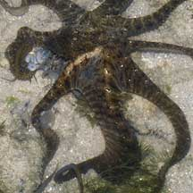 Web spreading out along the sides of the tentacle. Labrador, May 06 |
 Hiding in a dead Noble volute shell. Changi, Jun 13 |
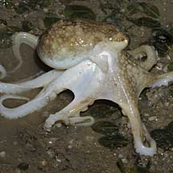 'Walking' with its head above the ground. Changi, May 09 |
| Armed and Dangerous: An octopus
searches for prey mostly at night, spreading out its eight long arms
to feel into crevices for crabs, prawns, snails, clams and other such
morsels. The highly flexible arms have strong suckers to grip objects
so that the octopus can slowly 'creep' over the surface as it stealthily
investigates all hiding places (octopuses use jet propulsion when
they are in a bigger hurry, see below). The arms also have numerous
receptors sensitive to taste and touch. The arms are joined together near the head with webbing. An octopus uses this webbing like a net. For example, to envelope a little mound of rubble where some small titbit might be hiding. When the prey attempts to escape, it is literally surrounded by octopus! Prey is killed with a bite of its sharp, hard beak. It is often then hauled back to the octopus' den for a leisurely meal. |
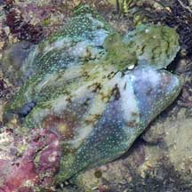 Using web as a net to trap prey. Pulau Hantu, Aug 04 |
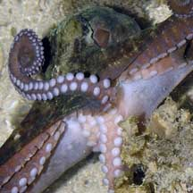 Underside is full of suckers. Sisters Island, May 07 |
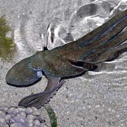 Using jet propulsion to move. Cyrene Reef, Oct 08 |
Octopuses bite! Although octopuses
have a hard beak and a radula (ribbon of teeth), they don't chew their
food. Digestive juices are injected into the prey which soften the
tissues. Some octopuses can drill a hole through a snail's shell to
get at it. Others crush shells and crack crabs with their hard beaks.
The octopus has three hearts. Besides the usual heart, it has two additional hearts, each pumping extra blood through the gills. Its blood is blue due to concentrations of copper-based pigments that transport oxygen. |
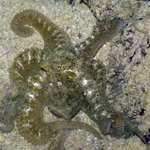 These three photos are of the same animal .. Sentosa, Jul 04 |
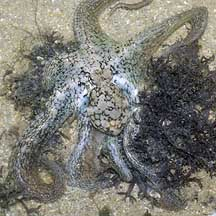 ... taken minutes apart. |
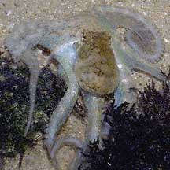 ...with rapid colour and texture changes! |
| Shell-less but not helpless: Unlike
most other molluscs, the octopus does not have a shell at all. This
is actually an advantage as the octopus can then squeeze into all
kinds of impossibly tight hiding places. The octopus, however, has
many other ways to deal with danger. In the first place, an octopus is generally very difficult to spot. It can change its colours and even the texture of its skin to blend with its surroundings. And change these rapidly as it moves to a new location. When spotted, some octopuses make sudden drastic colour changes to confuse the predator. They then zoom off using jet-propulsion; squirting a jet of water out of a funnel to zoom off in the opposite direction. When particularly alarmed, an octopus may release a cloud of ink to disorient predators. The ink may contain substances that affect the senses of other sea creatures. In the clouded water, the octopus makes its getaway. |
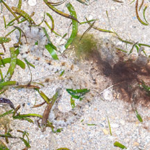 Inking - octopus is perfectly camouflaged with the sand. Cyrene, Mar 12 |
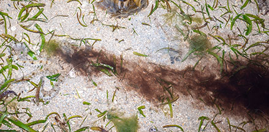 The ink coagulated a distance away, distracting from the octopus. Cyrene, Mar 12 |
| Octopus babies: Octopuses have separate genders. To mate, the male uses a special arm called a hectocotylus to insert a sperm packet into the female's body. While doing so, he usually keeps as far away from the female as possible, and he is usually pale, a sign of stress. The female uses the sperm to fertilise her eggs as she lays them. In most octopus species, the eggs are laid in capsules attached to hard surfaces. Here are some photos of cephalopod egg capsules. |
|
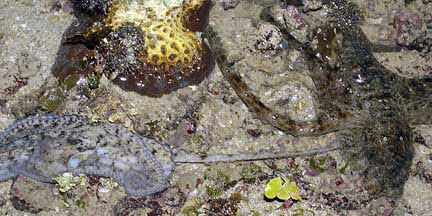 A pair of mating octopuses, one pale and the other dark. Sentosa, Jul 05 |
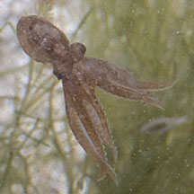 Tiny octopus among seaweeds. Sisters Island, May 12 |
|
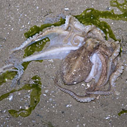 Changi, Jul 09 |
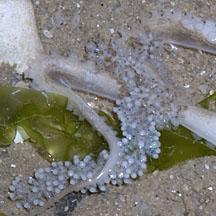 Carrying eggs? |
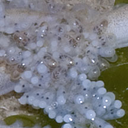 |
| Good mama: In bottom-dwelling octopuses, the female looks after her eggs; keeping
them oxygenated, free of algae and bacteria, and defending them from
predators. Some even carry their eggs with them. The female does not
feed during this time and usually dies after the eggs hatch. Most
octopuses breed only once in their life, and many die after doing
so. The eggs do not hatch into free-swimming larvae. Instead, miniature octopuses emerge. Some are rather well-developed and settle down soon after hatching. Others may drift with the plankton before settling down. Human uses: Octopuses are widely eaten in Asia. They are caught in many ways, including by lines, in pots or by trawling. Status and threats: None of our octopuses are listed among the endangered animals of Singapore. However, like other creatures of the intertidal zone, they are affected by human activities such as reclamation and pollution. Trampling by careless visitors can also affect local populations. |
| Some Octopuses on Singapore shores |
| Unidentified octopuses |
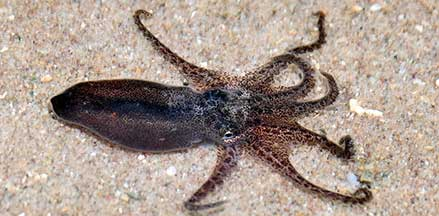 Pulau Tekukor, Nov 20 Photo shares by Loh Kok Sheng on facebook. |
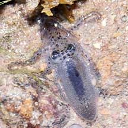 Pulau Tekukor, Nov 20 Photo shares by Loh Kok Sheng on facebook. |
| Family
Octopodidae recorded for Singapore from Tan Siong Kiat and Henrietta P. M. Woo, 2010 Preliminary Checklist of The Molluscs of Singapore. Common names from Cephbase ^from WORMS +Other additions (Singapore Biodiversity Record, etc)
|
Links
|